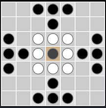

Board and Pieces
Ard Ri is played only by two players, the white player,
black player and the king (the gray Piece).
Attacker moves first.

The light square in the center is called the
"king's square", and only the king may land on
it. Pieces may not be jumped.
The king's square can also
be used (in place of a piece) to capture the king,
although the king may be used to capture whether
a moving piece or not.
Piece Objectives
- The white player directs the army of seven defenders.
The object of the white player is to get the king to
occupy any square on the edge of the board.
-
The black player directs an army of sixteen attackers.
His Objective is to capture the king.
Piece Moves
All pieces move in just
one step along a row or column (no diagonals).
A piece may safely move
between two enemy pieces, though; only the moving
player may capture.
Capturing a Piece(s)
Ordinary pieces
(but not the king) are captured by being bracketed
(called custodial capture) by two enemy pieces
across from each other.
Captured pieces are removed from
the board.
The king may be captured by
being surrounded on all four sides by enemy pieces
or the king's square.